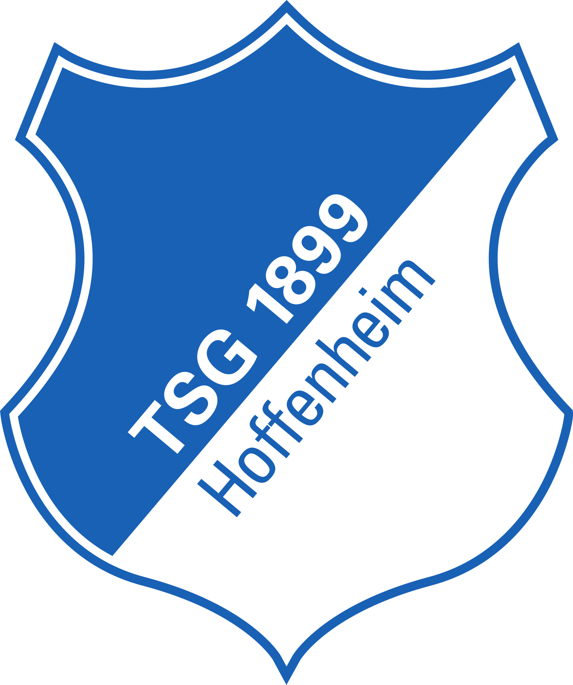
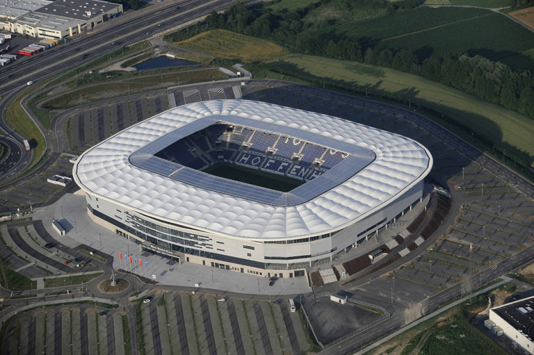

Treinador: Christian Ilzer
Christian Ilzer é um treinador de futebol austríaco que atualmente comanda o Hoffenheim. Christian Ilzer destaca-se no panorama europeu como um estratega meticuloso, especializado em futebol de alta intensidade e na reestruturação competitiva de plantéis.
Estádio: PreZero Arena
A PreZero Arena é o moderno, tecnológico e sustentável estádio do Hoffenheim. Este estádio tornou-se no símbolo máximo da transição do modesto "clube de aldeia" para os palcos da elite do futebol alemão e europeu.

Estilo de Jogo:
O estilo de jogo que Christian Ilzer utiliza no Hoffenheim baseia-se numa abordagem de altíssima intensidade, verticalidade extrema e agressividade sufocante, fortemente influenciada pela escola de futebol do grupo Red Bull.
"From the football pitch to the arena. From the village to the world!"